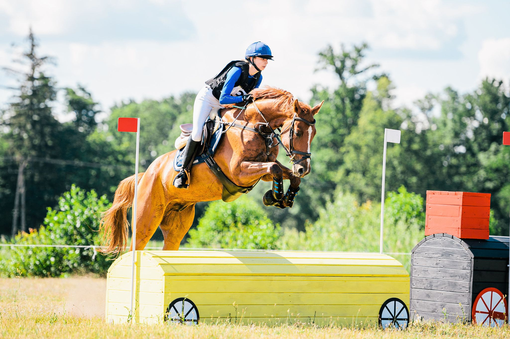

05.10.2020
Gotowi do startu,start!
Cześć Kochani!
Mam nadzieję, że jesteście gotowi i tęskniliście trochę bo chwilę Nas nie było, ale wracamy ze zdwojoną siłą!
Zaczynając od postów na blogu, poprzez portale społecznościowe, a kończąc na spotkaniu z Wami na zawodach i w Naszym sklepie.
W trochę powiększonym teamie będziemy przygotowywać dla Was nowości i pozostawać w stałym kontakcie! Miło jest też mi poinformować, że posty będą pojawiać się w dwóch językach - w polskim oraz angielskim tak, żeby każdy mógł uczestniczyć z Nami w tej jeździecko-modowej przygodzie.
Bardzo ciekawi mnie co działo się u Was i jak rozwija się Wasza jeździecka przygoda? Kończymy sezon otwarty i wchodzimy z powrotem na hale, ale komu udało się wystartować w tym sezonie, a kto przygotowuje się na zawody halowe? Jakie osiągaliście sukcesy ze swoimi kopytnymi? I pamiętajcie, że sukcesy to nie tylko puchary, ale codzienne małe kroki, które stawiacie jako para. Koniecznie dajcie znać na dole w komentarzach!
Jak pewnie widzieliście z mediów społecznościowych Dalia też nie zwalnia tempa jeśli chodzi o pracę z końmi i jednocześnie cały czas pracuje nad nowościami dla Was w sklepie,ale to nie wszystko! Koordynuje też zespołem,który jak już wspominałam jest odpowiedzialny za treści pojawiające się w Internecie, ale też za kontakt z Wami. Uwielbiamy pozostawać w kontakcie z klientami i tak pomyślałam, że jako wracamy po przerwie przypomnę Wam w ramach odświeżenia na czym polega działalność sklepu oraz paru z Naszych wspaniałych jeźdźców, których grono cały czas się powiększa.
Jak wiecie Dalia pasję jeździecką zaczęła łączyć z prowadzeniem własnego bloga oraz sklepu internetowego, dzięki czemu jest jedną z najbardziej rozpoznawalnych amazonek w kraju i tak z miłości do mody i jeździectwa powstała pierwsza kolekcja, którą możecie cieszyć się Wy i która sukcesywnie się rozrasta proponując już nie tylko koszule, ale praktycznie wszystkie elementy ubioru, które będą Wam potrzebne żeby w siodle, w stajni czy na zawodach czuć się nie tylko wygodnie, ale i niesamowicie stylowo. Bo musicie przyznać sami, w sklepie Design by Dalia znajdziecie perełki, których nie ma nigdzie indziej i to jest fakt!
ak mówi hasło sklepu "Feel it, Wear it, Ride it!’. Potwierdzeniem moich słów zdecydowanie jest lista jeźdźców, którzy z dumą noszą rzeczy z kwiatkiem w miejsc logo i wyglądają w nich oszałamiająco, chyba sami musicie przyznać! Nieśmiało mogę tylko powiedzieć, że ta odzież towarzyszy im w największych sukcesach odnoszonych na zawodach , ale także w codziennych trudach na treningu, które do tych sukcesów prowadzą.
Zaczynając od Naszych biało - czerwonych, rodzimych barw mamy w swoim teamie Julię Suską, Cassandrę Orschel, czy też Laurę Kłapińską.
Marka pochwalić się może także jeźdźcami z zagraniczych parkurów, a wśród nich Carolina Villanueva (Hiszpania), Paris Sellon (USA).
A to tylko garstka. Jeśli chcecie poznać ich wszystkich koniecznie zajrzyjcie na konto @designby_dalia na Instagramie w zapisanych relacjach pod hasłem TEAM